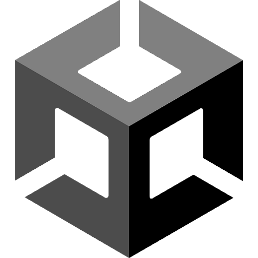
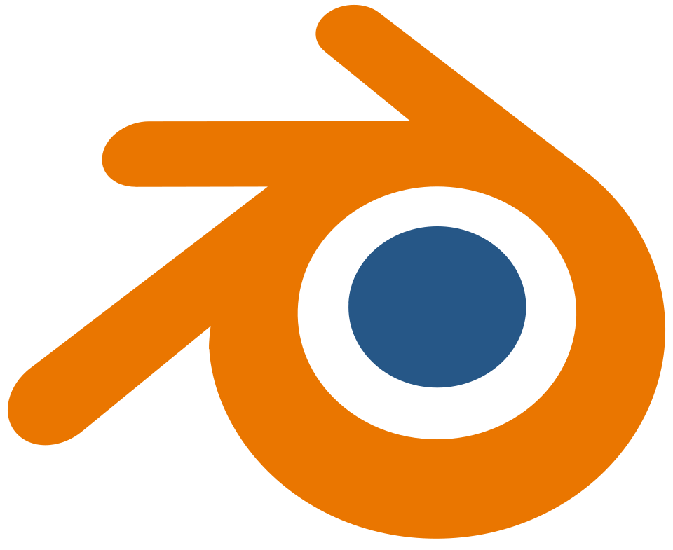
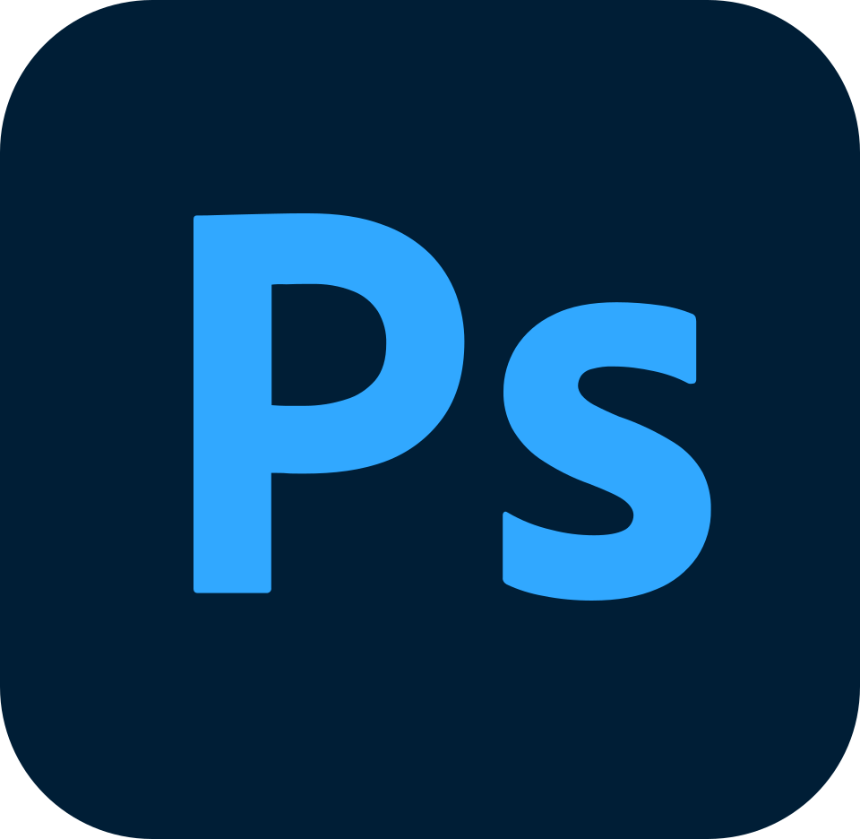
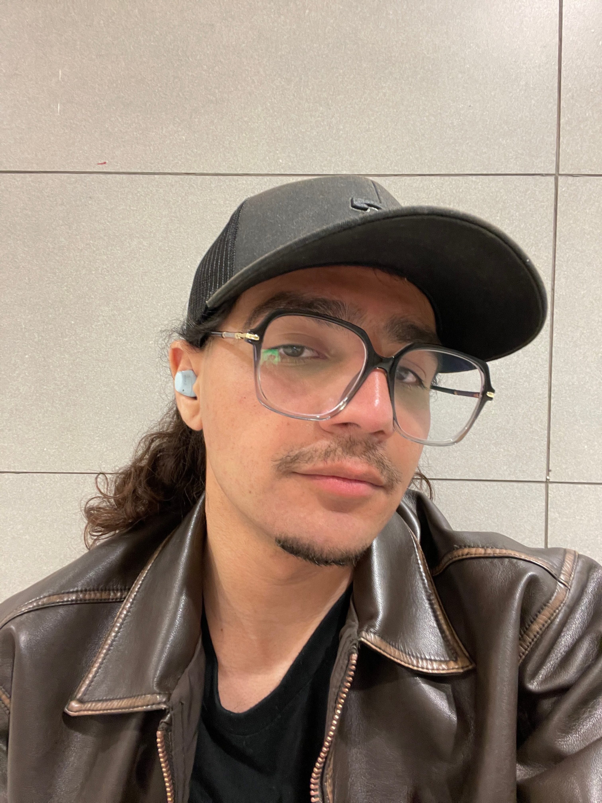

Plataformas de trabajo

Unity
Motor principal para el desarrollo de experiencias interactivas y videojuegos.

Blender
Modelado, texturizado y animación 3D de personajes y escenarios.

Photoshop
Edición de texturas, composición de imágenes y diseño gráfico.

C#
Programacion Basica

¿Quién soy?
Estudiante de 5to año de Ing. en Realidad Virtual y Diseño de Juegos Digitales, en la UBO. Un apasionado por el modelado 3D, la escenografía, la fotografía, hacer contenido y todo lo referente a ello.


Recomendaciones
Tu comentario me llega de forma privada y me ayuda a mejorar el portafolio.